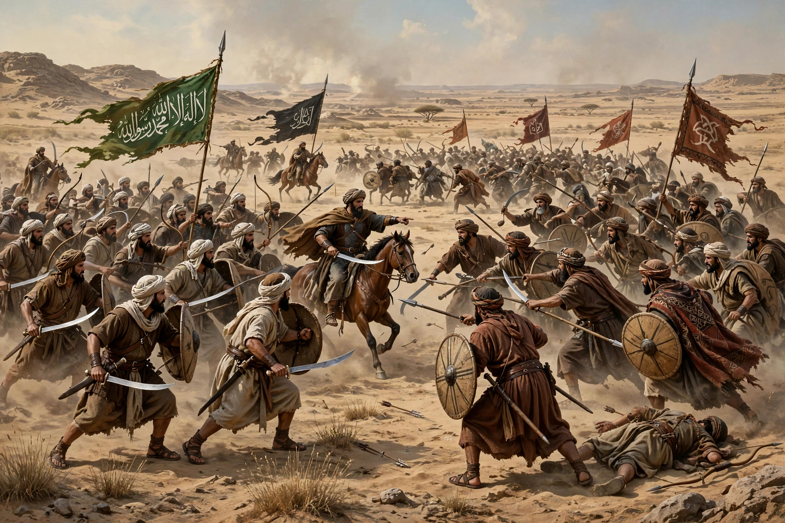

Battle of Yamama

The Battle of Yamama was fought in December 632 in the region of Yamama, in present-day Saudi Arabia, between the forces of the Rashidun Caliphate under Khalid ibn al-Walid and the army of Musaylima, a rival prophet who had risen among the Banu Hanifa during the Ridda wars that followed the death of Muhammad.
| Date | December 632 |
|---|---|
| Location | Plain of Aqraba, Yamama, Arabia |
| Result | Rashidun victory |
| Belligerents | Rashidun Caliphate — Banu Hanifa and followers of Musaylima |
| Commanders | Khalid ibn al-Walid; Abu Dujana †; Zayd ibn al-Khattab † — Musaylima †; Rajjal ibn Unfuwa † |
Background
After Muhammad's death in 632, many Arabian tribes renounced their allegiance to Medina. Musaylima, who had claimed prophecy since Muhammad's lifetime, held Yamama with the powerful Banu Hanifa tribe. Caliph Abu Bakr sent armies to subdue the apostate movements; an advance force under Ikrimah and Shurahbil was checked, and Khalid ibn al-Walid was ordered to Yamama with the main army.
The battle
The fighting on the plain of Aqraba was among the hardest of the Ridda wars. The Banu Hanifa initially drove the Muslims back to their camp before Khalid reorganised his troops by clan so that each contingent's honour was staked on holding its ground. The Hanifa were pushed back into a walled garden — afterwards remembered as the "Garden of Death" — where Musaylima was killed, traditionally by Wahshi ibn Harb, the Abyssinian who had killed Hamza at Uhud. Hanifa losses were very heavy, and the survivors submitted to Medina.
Aftermath
Among the Muslim dead were an unusually large number of Qur'an memorisers (huffaz), including Salim, the mawla of Abu Hudhayfa. Their loss prompted Umar to urge Abu Bakr to have the Qur'an collected into a single written codex — the compilation undertaken by Zayd ibn Thabit that underlies the standard text. Yamama's submission effectively ended organised resistance in central Arabia.